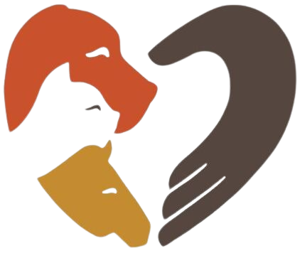
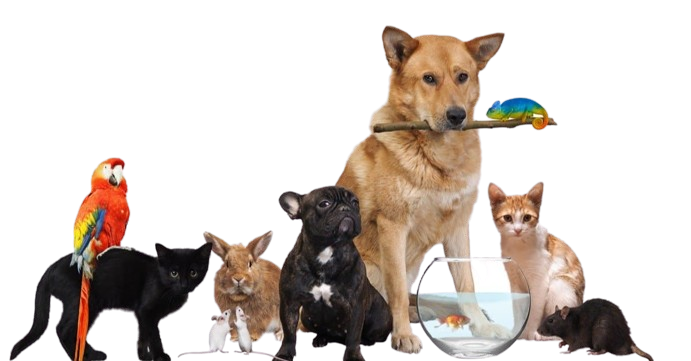

Yeni Heyvan Hüquqları Qanunu
Tarix: 1 may 2024-cü il
Heyvan hüquqlarına dair yeni qanun parlament tərəfindən qəbul edilib. Bu qanun heyvanları daha yaxşı qorumaq məqsədi daşıyır.
Biz heyvanların hüquqlarını müdafiə etmək və onların daha yaxşı həyat sürməsini təmin etmək üçün buradayıq. Fəaliyyətlərimizə qoşulun və gəlin birlikdə fərq yaradaq.
Biz heyvan hüquqları üçün çalışan bir qrup könüllüyük. Məqsədimiz heyvanların yaşayış şəraitini yaxşılaşdırmaq, onlara daha çox hüquq verməkdir. Bununla bağlı maarifləndirmə və tədbirlər təşkil etmək üçün çalışırıq.
Tarix: 15 iyun 2024-cü il
Yer: Bakı
Heyvan hüquqlarına dair məlumatlılığı artırmaq üçün yürüş və etiraz tədbirimizə qoşulun.
Tarix: 20 iyul 2024-cü il
Məkan: Bakı
Sahibsiz heyvanlar üçün qida paylanması və sağlamlıq yoxlaması tədbirimizə qoşulun.
Tarix: 5 avqust 2024-cü il
Yer: Bakı
Sığınacaqda heyvanlarla vaxt keçirmək və onlara kömək etmək üçün tədbirimizə qoşulun.
Tarix: 1 may 2024-cü il
Heyvan hüquqlarına dair yeni qanun parlament tərəfindən qəbul edilib. Bu qanun heyvanları daha yaxşı qorumaq məqsədi daşıyır.
Tarix: 10 aprel 2024-cü il
Könüllülərimizlə yerli heyvan sığınacağına baş çəkdik və oradakı heyvanlara yardım etdik. etdik.
Tarix: 22 mart 2024-cü il
Heyvan hüquqlarına dair beynəlxalq konfransda məruzəçi kimi iştirak etdik.
Heyvan hüquqlarının müdafiəsini dəstəkləmək üçün müxtəlif yollarla bizə qoşula bilərsiniz:
Bir çox evsiz heyvan sığınacaqlarda və küçədə yeni evlərini gözləyir. Onlara isti bir yuva təklif etmək İstəyirsiniz?
Sahiblənilməyi gözləyən sevimli itlərimizə baxın.

Sahiblənilməyi gözləyən şirin pişiklərimizə baxın.

Sahiblənilməyi gözləyən digər heyvanlarımıza nəzər salın.
Bizimlə əlaqə saxlamaq üçün aşağıdakı formanı doldura bilərsiniz.